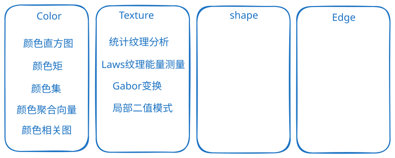
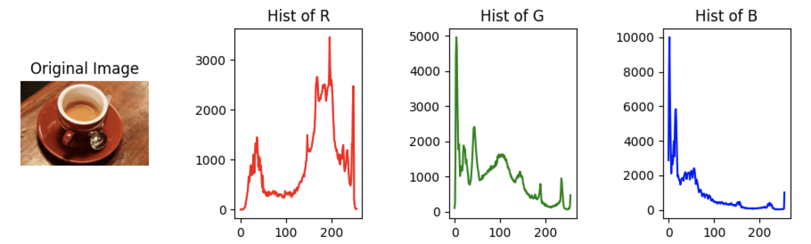
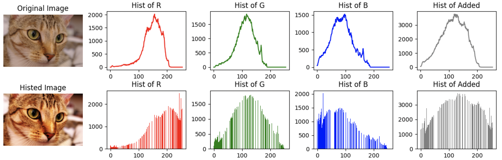
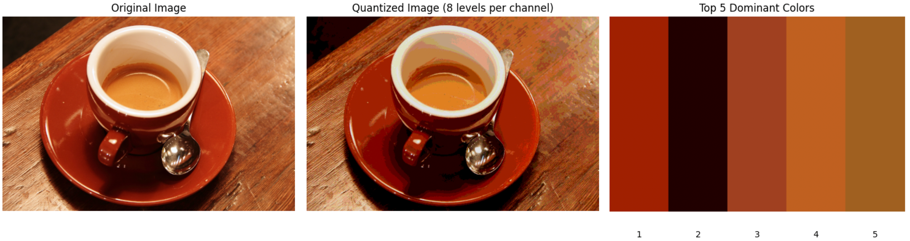
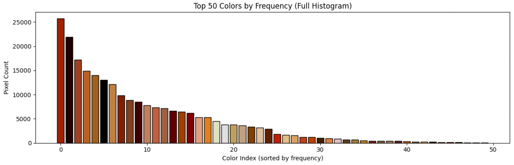

Image Feature
Overview

Color
颜色直方图
全局累加直方图与主色调直方图在 google 都搜不到！也没有别人的代码实现，这两个特征的真实性有待考察！
- 一般颜色直方图：某个色彩通道的直方图。👉 代码

- 全局累加直方图：对普通颜色直方图的多个色彩通道求和。当图像中的特征并不能取遍所有可取值时，统计直方图中会出现一些零值。这些零值的出现会对相似性度量的计算带来影响，从而使得相似性度量并不能正确反映图像之间的颜色差别。👉 代码

- 主色调直方图：在一幅图像中，不同颜色值出现的概率不尽相同，且通常情况下少数几种颜色就能涵盖整幅图像的主色调。基于该思想，主色调直方图法会计算出图像中每种颜色出现的频率，选择出现频率最高的几种颜色并将其作为主色调。使用主色调直方图并不会降低颜色直方图匹配的效果，反而会抑制图像非主要成分的噪声，降低噪声对图像匹配的影响。👉 代码


颜色矩
$p_{ij}$表示数字图像$P$的第$i$个图像通道的第$j$个像素的像素值，$N$表示图像中像素的个数。
- 一阶矩：表征该颜色通道的平均响应强度$$
\mu_i = \frac{1}{N}\sum_{j=1}^NP_{ij}$$ - 二阶矩：表示该颜色通道的响应方差$$
\sigma_i = [\frac{1}{N}\sum_{j=1}^N(P_{ij}-\mu_i)^2]^\frac{1}{2}$$ - 三阶矩：表征该颜色通道数据分布的偏移度$$
s_i = [\frac{1}{N}\sum_{j=1}^N(P_{ij}-\mu_i)^3]^\frac{1}{3}$$
👉 简介与python代码实现
颜色集
颜色集又可以称为颜色索引集，其是对图像颜色直方图的一种近似。
（其实我看就是对颜色直方图进行一遍筛选。）
- 方案一：通过颜色直方图
- 步骤
- 将图像从RGB颜色空间转换到HSV颜色空间等视觉均衡的颜色空间，并将颜色空间量化为若干个边长均等的小立方体；
- 使用基于色彩的自动分割技术将图像划分为若干个子区域；
- 使用颜色量化空间中的某个颜色分类索引每个子区域，以将图像表示为一个二进制的颜色索引集。
- 最简单的颜色集可以通过在颜色直方图的基础上设置阈值形成。如给定某一颜色值m，给定其阈值τm，由颜色直方图生成颜色集c可表示为：$$
c[m]=\begin{cases}1&h[m]≥\tau_m\0&others\end{cases}
- 步骤
\gamma_{i,j}^{(k)}=\underset{p_1\in I_{(i)}, p_2\in I}{\operatorname{P}}[p_2\in I_{(j)}\mid |p_1-p_2|=k]
ho(x,y)=\frac{\frac{1}{(N_i-\left|x\right|)(N_j-\left|y\right|)}\sum_{i}\sum_{j}I(i,j)I(i+x,j+y)}{\frac{1}{N_i N_j}\sum_{i=1}^{N_i}\sum_{j=1}^{N_j}I(i,j)^2}
import matplotlib.pyplot as plt
from skimage.feature import graycomatrix, graycoprops
from skimage import data
PATCH_SIZE = 21
# 载入相机图像
image = data.camera()
# 选择图像中的草地区域块
grass_locations = [(474, 291), (440, 433), (466, 165), (462, 236)]
grass_patches = []
for loc in grass_locations:
grass_patches.append(image[loc[0]:loc[0] + PATCH_SIZE,
loc[1]:loc[1] + PATCH_SIZE])
# 选择图像中的天空区域块
sky_locations = [(54, 48), (21, 233), (90, 380), (18, 330)]
sky_patches = []
for loc in sky_locations:
sky_patches.append(image[loc[0]:loc[0] + PATCH_SIZE,
loc[1]:loc[1] + PATCH_SIZE])
# 计算每个块中的灰度共生矩阵属性
xs = []
ys = []
for patch in (grass_patches + sky_patches):
glcm = graycomatrix(patch, [5], [0], 256, symmetric=True, normed=True)
xs.append(graycoprops(glcm, 'dissimilarity')[0, 0])
ys.append(graycoprops(glcm, 'correlation')[0, 0])
# 创建绘图
fig = plt.figure(figsize=(8, 8))
# 展现原始图像，以及图像块的位置
ax = fig.add_subplot(3, 2, 1)
ax.imshow(image, cmap=plt.cm.gray, interpolation='nearest',
vmin=0, vmax=255)
for (y, x) in grass_locations:
ax.plot(x + PATCH_SIZE / 2, y + PATCH_SIZE / 2, 'gs')
for (y, x) in sky_locations:
ax.plot(x + PATCH_SIZE / 2, y + PATCH_SIZE / 2, 'bs')
ax.set_xlabel('Image')
ax.set_xticks([])
ax.set_yticks([])
ax.axis('image')
# 对于每个块， plot (dissimilarity, correlation)
ax = fig.add_subplot(3, 2, 2)
ax.plot(xs[:len(grass_patches)], ys[:len(grass_patches)], 'go',
label='Grass')
ax.plot(xs[len(grass_patches):], ys[len(grass_patches):], 'bo',
label='Sky')
# ax.set_xlabel(' 灰度共生矩阵相似性')
ax.set_xlabel('Similarity')
# ax.set_ylabel('灰度共生矩阵相关度')
ax.set_ylabel('Correlation')
ax.legend()
# 展示图像块
for i, patch in enumerate(grass_patches):
ax = fig.add_subplot(3, len(grass_patches), len(grass_patches)*1 + i + 1)
ax.imshow(patch, cmap=plt.cm.gray, interpolation='nearest',
vmin=0, vmax=255)
ax.set_xlabel('Grass %d' % (i + 1))
for i, patch in enumerate(sky_patches):
ax = fig.add_subplot(3, len(sky_patches), len(sky_patches)* 2 + i + 1)
ax.imshow(patch, cmap=plt.cm.gray, interpolation='nearest',
vmin=0, vmax=255)
ax.set_xlabel('Sky %d' % (i + 1))
# 展示图像块并显示
fig.suptitle('Grey level co-occurrence matrix features', fontsize=14)
plt.show()
import numpy as np
import cv2
import matplotlib.pyplot as plt
# 定义Laws滤波器
basic_filters = {
'L3': np.array([[ 1, 2, 1]]), # Gray Level
'E3': np.array([[ 1, 0, -1]]), # Edge
'S3': np.array([[ 1, 2, -1]]), # Spot(点)
'L5': np.array([[ 1, 4, 6, 4, 1]]),
'E5': np.array([[ -1, -2, 0, 2, 1]]),
'S5': np.array([[ -1, 0, 2, 0, -1]]),
'W5': np.array([[ -1, 2, 0, -2, 1]]), # Wave
'R5': np.array([[ 1, -4, 6, -4, 1]]), # 涟漪（Ripple）
'R5': np.array([[ 1, -4, 6, -4, 1]]), # 涟漪（Ripple）
'L7': np.array([[ 1, 6, 15, 20, 15, 6, 1]]),
'E7': np.array([[ -1, -4, -5, 0, 5, 4, 1]]),
'S7': np.array([[ -1, -2, 1, 4, 1, -2, -1]]),
'W7': np.array([[ -1, 0, 3, 0, -3, 0, 1]]),
'R7': np.array([[ 1, -2, -1, 4, -1, -2, 1]]),
'O7': np.array([[ -1, 6, -15, 20, -15, 6, -1]]), # 振荡（Oscillation）
}
# 创建更复杂的Laws滤波器
laws_filters = {
'E5L5': np.dot(basic_filters['E5'].T, basic_filters['L5']),
'R5R5': np.dot(basic_filters['R5'].T, basic_filters['R5']),
'E5S5': np.dot(basic_filters['E5'].T, basic_filters['S5']),
'L5S5': np.dot(basic_filters['L5'].T, basic_filters['S5']),
}
# ... 可以添加更多组合
# 读取图像
from skimage import data
image = data.camera().astype(np.float32)
# 初始化纹理能量字典
texture_energies = {}
filtered_images = {}
# 应用Laws滤波器并计算纹理能量
for filter_name, filter_kernel in laws_filters.items():
# 应用滤波器
filtered_images[filter_name] = cv2.filter2D(image, -1, filter_kernel)
# 计算纹理能量
energy = np.sum(filtered_images[filter_name]**2) # type: ignore
# 保存结果
texture_energies[filter_name] = energy
# 打印纹理能量
for filter_name, energy in texture_energies.items():
print(f"Texture energy for {filter_name}: {energy}")
# 可视化滤波后的图像（可选）
def plot(n,index,image,name):
plt.subplot(1,n,index)
plt.imshow(image, cmap='gray')
plt.title(name)
plt.axis('off')
plot(5,1,image,'Origin')
for i, (name, image) in enumerate(zip(laws_filters.keys(), filtered_images.values())):
plot(5,i+2,image,name)
plt.tight_layout()
plt.show()
G_{\sigma,f_0,\phi}(x,y)=\exp\left(-\frac{1}{2}\left[\frac{x'^2}{\sigma_x^2}+\frac{y'^2}{\sigma_y^2}\right]\right)\cos(2\pi f_0 x'+\phi)
\begin{aligned} &x'=x\cos(\theta)+y\sin(\theta),\ &y'=-x\sin(\theta)+y\cos(\theta). \end{aligned}
"""
基于二值模式的图像纹理分类
"""
import numpy as np
import matplotlib.pyplot as plt
METHOD = 'uniform'
# plt.rcParams['font.size'] = 9
def plot_circle(ax, center, radius, color):
circle = plt.Circle(center, radius, facecolor=color,edgecolor='0.5')
ax.add_patch(circle)
def plot_lbp_model(ax, binary_values):
"""LBP 方法模型绘制."""
# Geometry spec
theta = np.deg2rad(45)
R = 1
r = 0.15
w = 1.5
gray = '0.5'
# Draw the central pixel.
plot_circle(ax, (0, 0), radius=r, color=gray)
# Draw the surrounding pixels.
for i, facecolor in enumerate(binary_values):
x = R * np.cos(i * theta)
y = R * np.sin(i * theta)
plot_circle(ax, (x, y), radius=r, color=str(facecolor))
# Draw the pixel grid.
for x in np.linspace(-w, w, 4):
ax.axvline(x, color=gray)
ax.axhline(x, color=gray)
# Tweak the layout.
ax.axis('image')
ax.axis('off')
size = w + 0.2
ax.set_xlim(-size, size)
ax.set_ylim(-size, size)
fig, axes = plt.subplots(ncols=5, figsize=(7, 2))
titles = ['flat', 'flat', 'edge', 'corner', 'non-uniform']
binary_patterns = [np.zeros(8),
np.ones(8),
np.hstack([np.ones(4), np.zeros(4)]),
np.hstack([np.zeros(3), np.ones(5)]),
[1, 0, 0, 1, 1, 1, 0, 0]]
for ax, values, name in zip(axes, binary_patterns, titles):
plot_lbp_model(ax, values)
ax.set_title(name)
#二值模式特征提取部分
from skimage.transform import rotate
from skimage.feature import local_binary_pattern
from skimage import data
from skimage.color import label2rgb
# settings for LBP
radius = 3
n_points = 8 * radius
def overlay_labels(image, lbp, labels):
mask = np.logical_or.reduce([lbp == each for each in labels])
return label2rgb(mask, image=image, bg_label=0, alpha=0.5)
def highlight_bars(bars, indexes):
for i in indexes:
bars[i].set_facecolor('r')
image = data.brick()
lbp = local_binary_pattern(image, n_points, radius, METHOD)
def hist(ax, lbp):
n_bins = int(lbp.max() + 1)
return ax.hist(lbp.ravel(), bins=n_bins, range= (0, n_bins), facecolor='0.5')# normed=True,
# 绘制LBP直方图
fig, (ax_img, ax_hist) = plt.subplots(nrows=2, ncols=3, figsize=(9, 6))
plt.gray()
titles = ('edge', 'flat', 'corner')
w = width = radius - 1
edge_labels = range(n_points // 2 - w, n_points // 2 + w + 1)
flat_labels = list(range(0, w + 1)) + list(range(n_points - w, n_points + 2))
i_14 = n_points // 4 # 1/4th of the histogram
i_34 = 3 * (n_points // 4) # 3/4th of the histogram
corner_labels = (list(range(i_14 - w, i_14 + w + 1)) +
list(range(i_34 - w, i_34 + w + 1)))
label_sets = (edge_labels, flat_labels, corner_labels)
for ax, labels in zip(ax_img, label_sets):
ax.imshow(overlay_labels(image, lbp, labels))
for ax, labels, name in zip(ax_hist, label_sets, titles):
counts, _, bars = hist(ax, lbp)
highlight_bars(bars, labels)
ax.set_ylim(top=np.max(counts[:-1]))
ax.set_xlim(right=n_points + 2)
ax.set_title(name)
ax_hist[0].set_ylabel('Percentage')
for ax in ax_img:
ax.axis('off')
#使用LBP对图像纹理进行分类
radius = 2
n_points = 8 * radius
def kullback_leibler_divergence(p, q):
p = np.asarray(p)
q = np.asarray(q)
filt = np.logical_and(p != 0, q != 0)
return np.sum(p[filt] * np.log2(p[filt] / q[filt]))
def match(refs, img):
best_score = 10
best_name = None
lbp = local_binary_pattern(img, n_points, radius, METHOD)
n_bins = int(lbp.max() + 1)
hist, _ = np.histogram(lbp, density=True, bins=n_bins, range= (0, n_bins))
for name, ref in refs.items():
ref_hist, _ = np.histogram(ref, density=True, bins=n_bins,
range=(0, n_bins))
score = kullback_leibler_divergence(hist, ref_hist)
if score < best_score:
best_score = score
best_name = name
return best_name
brick = data.brick()
grass = data.grass()
wall = data.gravel()
refs = {
'brick': local_binary_pattern(brick, n_points, radius, METHOD),
'grass': local_binary_pattern(grass, n_points, radius, METHOD),
'wall': local_binary_pattern(wall, n_points, radius, METHOD)
}
# 对特征进行分类
print('Rotated images matched against references using LBP:')
print('original: brick, rotated: 30deg, match result: ',
match(refs, rotate(brick, angle=30, resize=False)))
print('original: brick, rotated: 70deg, match result: ',
match(refs, rotate(brick, angle=70, resize=False)))
print('original: grass, rotated: 145deg, match result: ',
match(refs, rotate(grass, angle=145, resize=False)))
# 绘制LBP纹理直方图
fig, ((ax1, ax2, ax3), (ax4, ax5, ax6)) = plt.subplots(nrows=2, ncols=3, figsize=(9, 6))
plt.gray()
ax1.imshow(brick)
ax1.axis('off')
hist(ax4, refs['brick'])
ax4.set_ylabel('Percentage')
ax2.imshow(grass)
ax2.axis('off')
hist(ax5, refs['grass'])
ax5.set_xlabel('Uniform LBP values')
ax3.imshow(wall)
ax3.axis('off')
hist(ax6, refs['wall'])
plt.show()
import numpy as np
import matplotlib.pyplot as plt
from skimage import measure
# 构建测试数据
x, y = np.ogrid[-np.pi:np.pi:100j, -np.pi:np.pi:100j]
r = np.sin(np.exp((np.sin(x)**3 + np.cos(y)**2)))
# 找出轮廓边界
contours = measure.find_contours(r, 0.8)
# 显示对应边界
fig, ax = plt.subplots()
ax.imshow(r, interpolation='nearest', cmap=plt.cm.gray)
for n, contour in enumerate(contours):
ax.plot(contour[:, 1], contour[:, 0], linewidth=2)
ax.axis('image')
ax.set_xticks([])
ax.set_yticks([])
plt.show()
# 提取傅里叶形状描述符
contour_array = contour
contour_complex = np.empty(contour_array.shape[:-1], dtype=complex)
contour_complex.real = contour_array[:, 0]
contour_complex.imag = contour_array[:, 1]
fourier_result = np.fft.fft(contour_complex)
print(fourier_result.shape)
M'{jk}=\sum)^kf(x,y)}^{N}\sum_{y=1}^{M}(x-\overline{x})^j(y-\overline{y
\tan 2\theta=\frac{2\mu_{11}}{\mu_{20}- \mu_{02} }
$$
将x、y轴分别旋转$\theta$角得坐标轴x和y'，x'、y称为该物体的主轴。如果物体在计算矩之前旋转$\theta$角，或相对于x', y轴计算短，那么计算后得出的矩具有旋转不变性。
Edge
一阶边缘检测
- Robert
- Sobel
- Prewitt
二阶边缘检测
- Laplace
- LoG = Gaussian + Laplace = 平滑 + 边缘
Point
一是基于模板的角点检测算法；二是基于边缘的角点检测算法；三是基于图像灰度变化的角点检测算法
SUSAN算法：
SUSAN以及后续研究：[13] https://core.ac.uk/download/41438484.pdf
- 用圆形模板，根据亮度值是否相似于核心点亮度的，把区域分成核值相似区USAN与核值不相似区
- 模板在图像上移动时
- 当圆形模板完全在背景或者目标区域时 ,其 USAN区域最大
- 当核心在边缘时 , USAN 区域减少一半
- 当核心在角点时 , USAN 区域最小
- 可以通过计算每 1 个像素的 USAN 值，并与设定的门限值进行比较， 如果该像素的 USAN 值小于门限 值，则该点可以认为是 1 个边缘点
.png)
.png)
[14] https://baike.baidu.com/item/susan%E7%AE%97%E5%AD%90/5532045
Reference
[1] https://blog.51cto.com/u_13984132/5477443
[2] https://hal.science/hal-02126655v1/file/Texture_Feature_Extraction_Methods_A_Survey.pdf
[3] https://github.com/cgreen259/Texture-Toolbox
[4] M. Petrou and P. G. Sevilla, Image Processing: Dealing With Texture, vol. 1. Chichester, U.K.: Wiley, 2006.
[5] https://medium.com/@krzysztofdrelczuk/acf-autocorrelation-function-simple-explanation-with-python-example-492484c32711
[6] M. Sharma and H. Ghosh, ‘‘Histogram of gradient magnitudes: A rotation invariant texture-descriptor,’’ in Proc. IEEE Int. Conf. Image Process. (ICIP), Sep. 2015, pp. 4614–4618.
[7] http://matlab.izmiran.ru/help/toolbox/images/enhanc15.html
[8] https://ojskrede.github.io/inf4300/notes/week_02/
[9] https://courses.cs.washington.edu/courses/cse576/book/ch7.pdf
[10] https://aihalapathirana.medium.com/understanding-the-local-binary-pattern-lbp-a-powerful-method-for-texture-analysis-in-computer-4fb55b3ed8b8
[11] https://www.doc88.com/p-7176387138708.html
[12] https://blog.csdn.net/Lemon_jay/article/details/89349006
[13] https://core.ac.uk/download/41438484.pdf
[14] https://baike.baidu.com/item/susan%E7%AE%97%E5%AD%90/5532045